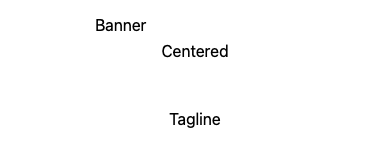
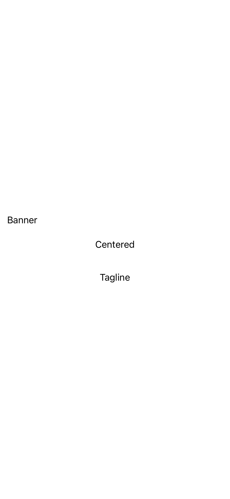
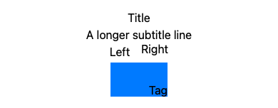
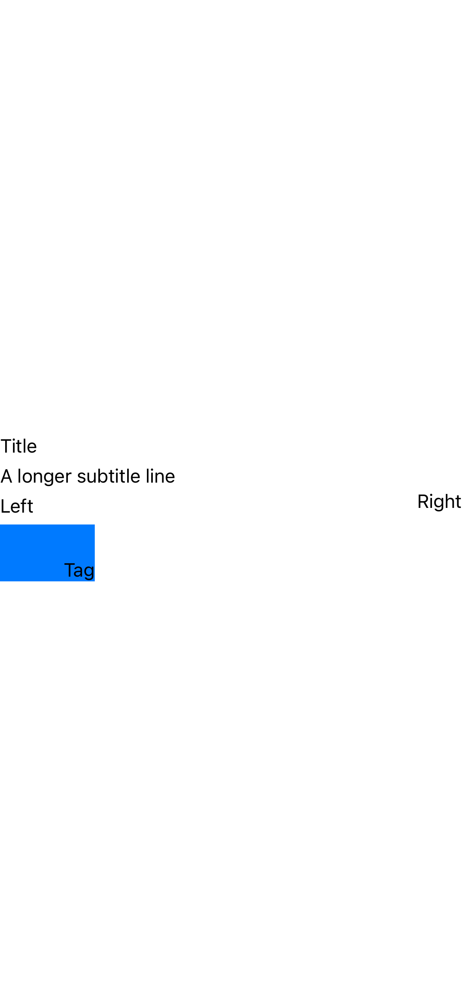
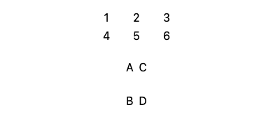
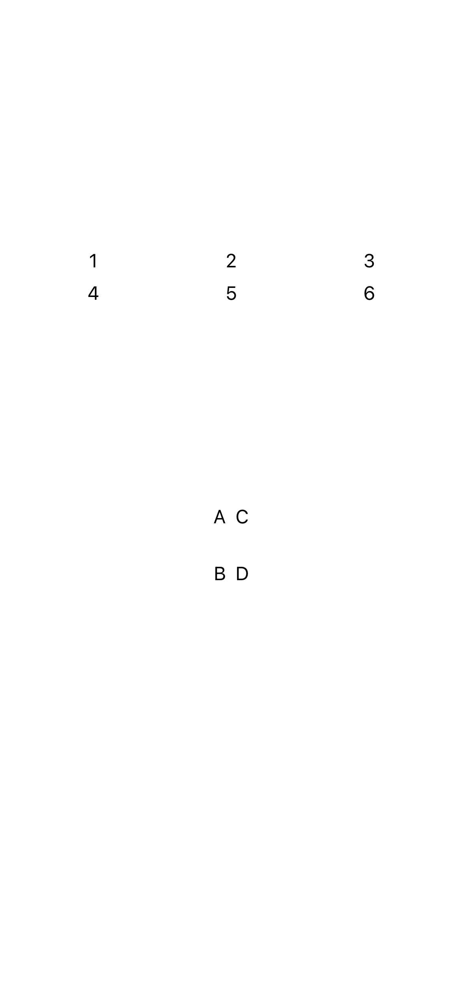
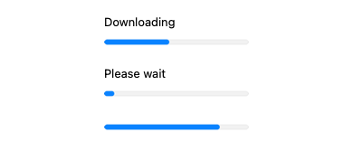
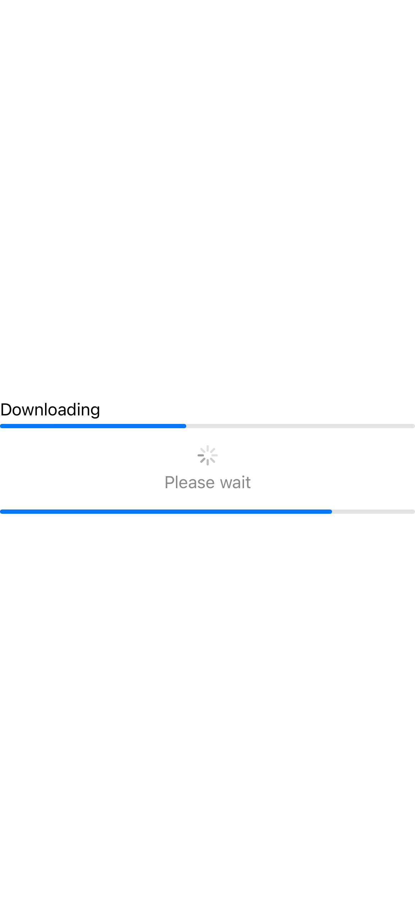
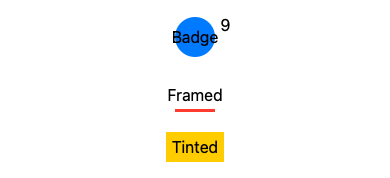
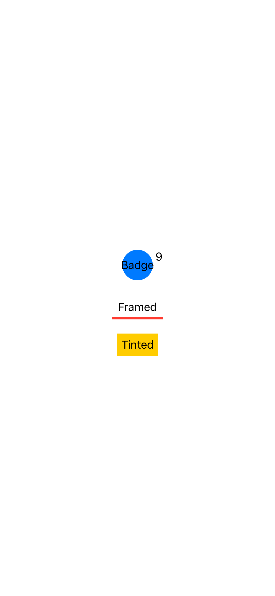

Five lockstep slices landed end-to-end across all three appliers — the
Rust runtime (tswift-swiftui), the web host
(swiftui-canvas), and the iOS UiirRenderer —
each backed by UIIR goldens and dual-host snapshots.
Every later slice was blocked by one thing: builtin SwiftUI
views/modifiers carried no parameter types, so a leading-dot
member (.center, .infinity,
.horizontal) could not resolve and collided across the
alignment / edge / axis namespaces. The fix mirrors how Swift and
msf work — a typed API signature drives implicit-member
resolution. We taught the interpreter's builtin registration to carry a
BuiltinParam signature, so the dispatcher pushes a
contextual type while evaluating builtin call arguments, reusing the
existing type_hint / resolve_implicit_static
machinery. With that seam open, frame(alignment:),
.frame(maxWidth: .infinity), directional padding, stack and
grid alignment, and overlay alignment all became expressible.
BuiltinParam contextual-typing seam in
tswift-core; Alignment /
HorizontalAlignment / VerticalAlignment /
Edge token types; .infinity resolution
against a floating contextual type; frame alignment +
.infinity and directional padding honored
end-to-end.


Stacks (and lazy stacks) honor alignment: on their cross
axis; the token resolves against the right 1-D/2-D namespace.
Bundled with Spacer(minLength:) and offset.


A GridItem prelude type
(.flexible/.fixed/.adaptive,
with maximum:) plus JSON array-valued arg
serialization. Array literals now evaluate each element under the
array's element type, so [.flexible(), .fixed(80)]
resolves against GridItem.


ProgressView("Loading", value:)'s title becomes a
label arg. Web wraps the <progress> in
a labelled column only when a label is present (bare bars stay
byte-identical) and restructures live on setArgs; iOS
uses the string-title initializers.


.background(_ view) and
.overlay(_ view, alignment:) accept an arbitrary nested
view subtree (its own 0-rooted id space) — direct,
custom, or @ViewBuilder closure. Web gains a detached,
non-patch-addressed renderer painting the subtree as an
absolutely-positioned, isolation-contained layer; iOS composites
natively.


Each slice followed implement → review → verify → merge. Every PR
was reviewed by a codex gpt-5.5 reviewer before merge; the
14 Important issues it surfaced (contextual-resolution ordering,
shadowing guards, host parity, stacking contexts, patch indexing, live
restructuring, event-id collisions) were all fixed and re-reviewed to
a Ready verdict. Verification per PR: cargo test (runtime +
UIIR golden harness), npm run typecheck + Playwright
snapshots (web), and swift build + XCTest snapshots (iOS).
Existing goldens stayed byte-identical throughout.